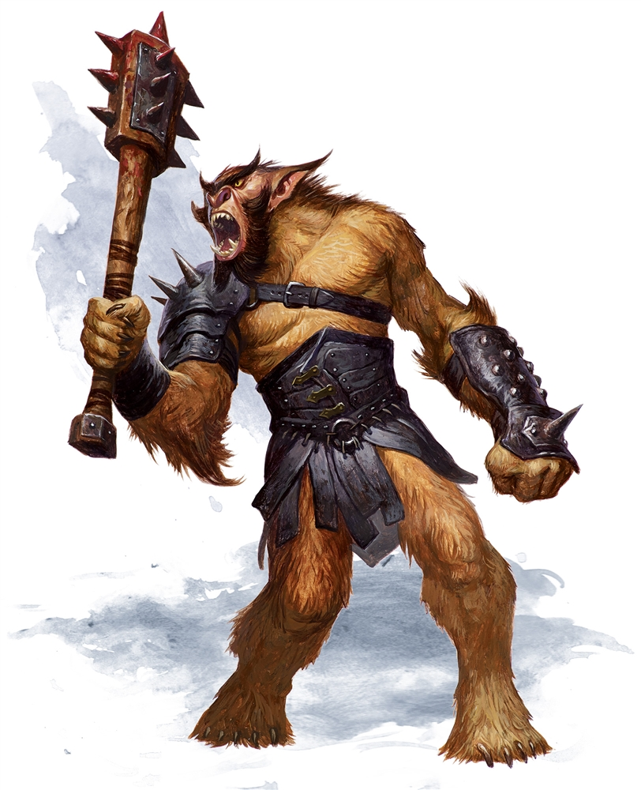
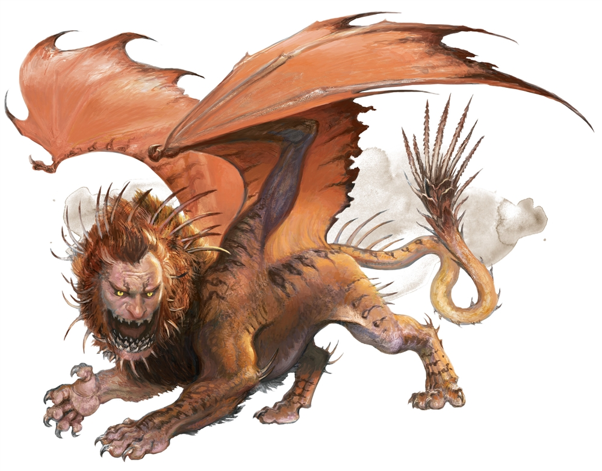

Goblins are small, black-hearted humanoids that lair in despoiled dungeons and other dismal settings. Individually weak, they gather in large numbers to torment other creatures.A monstrous cross between giant owl and bear, an owlbear’s reputation for ferocity and aggression makes it one of the most feared predators of the wild.

Bugbears are hairy goblinoids born for battle and mayhem. They survive by raiding and hunting, but are fond of setting ambushes and fleeing when outmatched.Ogres are hulking giants notorious for their quick tempers. When its rage is incited, an ogre lashes out in a frustrated tantrum until it runs out of objects or creatures to smash.

A manticore has a vaguely humanoid head, the body of a lion, and the wings of a dragon. Its long tail ends in a cluster of deadly spikes that can impale prey at impressive range.A beholder’s spheroid body levitates at all times, and its great bulging eye sits above a wide, toothy maw, while the smaller eyestalks that crown its body twist and turn to keep its foes in sight. When a beholder sleeps, it closes its central eye but leaves its smaller eyes open and alert.The most cunning and treacherous of true dragons, green dragons use misdirection and trickery to get the upper hand against their enemies. A green dragon is recognized by the crest that begins near its eyes and continues down its spine, reaching full height just behind the skull.The mysterious flumphs drift through the Underdark, propelled through the air by the jets whose sound gives them their name. A flumph glows faintly, reflecting its moods in its color. Soft pink means it is amused, deep blue is sadness, green expresses curiosity, and crimson is anger.